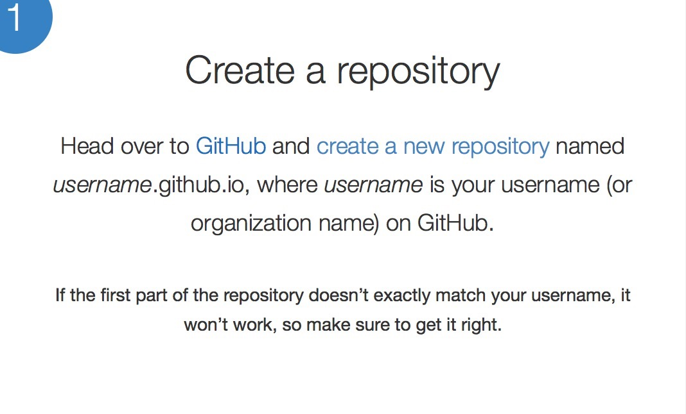

背景
08年建了一个 个人博客网站，购买了hostmonster的空间和一个.info的域名，写过几篇文章，后来不了了之。空间被回收，域名过期，资料丢失，很是遗憾。所以一直有重新开一个的想法。但是想起国内建站的烦人的备案审查和国外服务器的龟速，终究还没有重建。最近有感于一些东西还是有必要记录&分享，故又萌生了重新搭建博客的想法。
现在再看博客市场，已经比以前成熟了很多。各种平台网站开的小清新博客一大堆，但在平台网站上搭博客的弊端是显而易见的：
问题
- 流量都贡献给了平台
- 难以树立个人品牌
- 话语权不在本人，而是平台
- 各种审查、删帖
- 功能无法定制
- 无法挂推广代码
- 平台广告想插就插
但也不是一无是处，至少：
- 免费
- 有可能平台帮助推广
总的来说，缺点大于优点，放弃。继而考虑自己申请域名和空间。就在15.11.2日，我申请了godaddy的.com域名(两年¥116走支付宝，有无coupon都是一样的价格，但需要在网上找coupon链接，否者自己在官网购买是无法支付的。)，申请了digitaloccean的vps，$5每月，拿个coupon可以在账户上充值$10,够用3个月了。域名就没有什么好说的了。说说digitaloccean的vps:
优点
- 管理界面清爽，相比godaddy
- 管理菜单操作简单，相比godaddy
- 菜单即使加载不出来，也有黑白无图的basic html版本可供使用
- 支付也方便，相比godaddy
（godaddy我是黑定了，哈哈）
缺点
- 官网页面加载速度慢，想快得用vpn
- 客服不到位(vps才申请了两天就被锁了,说我的主机流量异常，我还没开始搭建网站啊啊啊啊,我至今都不知道我的主机是什么原因异常，难道被黑了？腾讯、阿里云也会发邮件报告各种异常，而你却直接通知我vps被锁定？而且只能重建vps？！！！这一点是不能忍受的！！！)
刚好，就在这个时候，我想起了blahgeek，想起了他的博客设计正合我意，遂email咨询，博主好nice地告诉我，那个网站竟然是静态站，告诉我是用make生成的。
茅塞顿开！于是，我知道了：
- jekyll
- github 可以托管个人博客
- github 可以无空间、流量限制托管个人博客
然后又知道了：
- pelican
- markdown
- disqus
真是踏破铁鞋无觅处，得来全不费功夫！我一直希望找一个这样的平台：
- 可以记录和保存我写的东西
- 可以做版本管理
- 没有空间流量担忧
- 界面可以定制，不被平台干预
- 无审核等待
- 稳定，最好不要轻易被墙
- 最好免费
而github，正是这样的平台！
而对于生产静态站的工具选择，我选择了pelican，没有选jekyll。因为jekyll用的是ruby，不了解。pelican是基于python的，我对python比较感兴趣，所以就果断pelican 了。
有人说，写博客的人，要经历三个境界： 1. 在平台上的免费博客上写 2. 自己租域名空间架设博客系统写 3. 使用类似github＋静态站＋评论系统 这样的方式写
比照自己，似乎也这么走来的。曾经在几个平台，如sina,和讯，qzone等网站开通过博客，虽然没有写过几篇文章，但是也算这么走过来的。自己架网站的事情，正如上所提到的，做过两遍了。而现在，我正在做第三种，采用这种方式搭建博客的好处，就是维护成本低！
闲话休提，下面就我部署这个博客遇到的问题说说,由于这种建博客的方式相对geek一些，对于没有IT基础的盆友，是比较困难的，这里默认你都是有it底的，至少对root , python , mac/linux ,github等都是有概念的。
部署流程
注册github.com 的帐号
这里我就不多说了，直接上官方网站注册即可。而我早前已经注册过，我的github是 https://github.com/willpoon 。
 图1 ： 新建repository
图1 ： 新建repository
图2 ： 起名 github要求我们对用于user pages的repository，要用 ：gitusername+github.[com|io] 格式的用户名，如下图。不知道为什么，可能是为了方便管理吧。 
参考：https://pages.github.com
在你的电脑上安装python 和 pelican
请使用root 权限在电脑上安装python和pilican 。 然后使用 pelican-quickstart 来初始化一个本地目录结构，用于维护你的博客。关于你博客的所有设置，都是在生成的这个目录中维护。
问题1.执行pelican-quickstart 命令，有很多问题提示，该怎么选择，选错了怎么办？
不用担心，选项所生成的配置，都在pelicanconf.py 中保存，错了可以随时修改。 例如我的plicanconf.py 配置：
#!/usr/bin/env python
# -*- coding: utf-8 -*- #
from __future__ import unicode_literals
AUTHOR = u'poon'
SITENAME = u'i.M.X.3'
SITEURL = ''
PATH = 'output/content'
TIMEZONE = 'Asia/Shanghai'
DEFAULT_LANG = u'zh'
# Feed generation is usually not desired when developing
FEED_ALL_ATOM = None
CATEGORY_FEED_ATOM = None
TRANSLATION_FEED_ATOM = None
AUTHOR_FEED_ATOM = None
AUTHOR_FEED_RSS = None
# Blogroll
#LINKS = (('Pelican', 'http://getpelican.com/'),
# ('Python.org', 'http://python.org/'),
# ('Jinja2', 'http://jinja.pocoo.org/'),
# ('You can modify those links in your config file', '#'),)
LINKS = (('LinkedIn', 'https://www.linkedin.com'),
('SlideShare', "http://www.slideshare.net"),
('Github', "https://www.github.com"),
('知乎', "http://www.zhihu.com"),
('Quora', "https://www.quora.com"),
('欢迎交换链接', "#"),)
SOCIAL = (('weibo', 'http://weibo.com/poooon'),
('github', 'http://github.com/willpoon'),)
# Social widget
#SOCIAL = (('You can add links in your config file', '#'),
# ('Another social link', '#'),)
DEFAULT_PAGINATION = 10
# Uncomment following line if you want document-relative URLs when developing
#RELATIVE_URLS = True
DISQUS_SITENAME = 'gitwillxxxx'
#THEME = 'bootstrap2'
THEME = 'gum'
#THEME = 'simple-bootstrap'
#THEME = 'zurb-F5-basic'
#THEME = 'Just-Read'
#THEME = 'SoMA2'
问题2:出于方便备份需要，我想将content目录放到output目录中，一起提交到github，是否可行？
完全没问题,你只需要修改Makefile中的INPUTDIR即可。例如我修改为：
OUTPUTDIR=$(BASEDIR)/output
INPUTDIR=$(OUTPUTDIR)/content
问题3:如果文章已经写得差不多，已经放在了content目录下，但是暂时不想发布，又不想另外找地方保存，有什么方法可以不让文章自动发布呢？
简单，把相应的md文件重命名一下扩展名就行了,比如： mv myblogpost.md myblogpost.mk.wait
问题4：如何 "一键"提交&发布博客：
imx(){
cd /Users/poon/Git/gitblog_imx3
make html
cd output/
git add .
git commit -m "commit by shell function"
git push origin master
cd ..
}
btw : gum这个模版很智能，可以对语法自动高亮！
问题5:WARNING: There are 2 variants of "oracle-biee-develop" with lang zh
CRITICAL: RuntimeError: File develop.html is to be overwritten 当有多个md文件，如果有两个以上的Slug是一样的时候，就会报这个错。slug改成不一样的就行了。
错误或不相关的disqus reveal , 如何删除？
登录disqus reveal , 删除与帖子相关的评论即可。
为何我的主题支持tag cloud ， 但是生成的网站就是无法展示
关于 tag cloud not shown 的问题，我当时也纠结了好久，后来google到一篇贴子，说pelican从3.6 开始，把tag cloud 功能作为单独的插件提供，需要安装plugin才能生成。 具体方法： 切换到 pelicanconf.py 所在的目录： 执行： git clone https://github.com/getpelican/pelican-plugins.git 获得pelican 插件目录。 编辑：pelicanconf.py,添加如下配置：
PLUGIN_PATHS = ["pelican-plugins"]
PLUGINS = ["tag_cloud"]
TAG_CLOUD_STEPS=4
TAG_CLOUD_MAX_ITEMS=100
TAG_CLOUD_SORTING = 'random'
8.如何添加google https://analytics.google.com/ 的统计？
- 首先, 你得有一个google帐号，然后登录 https://analytics.google.com/ 开通analytics服务。你将会获得一个 Tracking ID ， 以'UA-' 打头。
-
其次, 你需要在 pelicanconf.py 中添加 如下代码：
GOOGLE_ANALYTICS='UA-12345...'
该代码让google统计服务爬取你的网站，然后把数据统计归入你的账户中。
9.如何在markdown中使用删除线？
我试过 ｀~~ 删除我~~｀ , 不起作用。 后来查到 <del> 删除我</del> 和 ｀删除我` 都可以。
10.安装google page views 提取工具到pelican时，遇到： ssl.SSLError: [Errno 185090050] _ssl.c:343: error:0B084002:x509 certificate routines:X509_load_cert_crl_file:system lib 的解决。
分析：这个报错是由于cacerts.txt这个文件的权限设置问题导致的。需要将文件权限设置为644.如下：
$ sudo find / -name cacerts.txt
find: /dev/fd/3: Not a directory
find: /dev/fd/4: Not a directory
/Library/Python/2.7/site-packages/httplib2-0.9.2-py2.7.egg/httplib2/cacerts.txt
$ ls -arlt /Library/Python/2.7/site-packages/httplib2-0.9.2-py2.7.egg/httplib2/cacerts.txt
-rw-r----- 1 root wheel 134862 Nov 10 20:44 /Library/Python/2.7/site-packages/httplib2-0.9.2-py2.7.egg/httplib2/cacerts.txt
$ chmod 644 /Library/Python/2.7/site-packages/httplib2-0.9.2-py2.7.egg/httplib2/cacerts.txt
chmod: Unable to change file mode on /Library/Python/2.7/site-packages/httplib2-0.9.2-py2.7.egg/httplib2/cacerts.txt: Operation not permitted
$ sudo chmod 644 /Library/Python/2.7/site-packages/httplib2-0.9.2-py2.7.egg/httplib2/cacerts.txt
$ proxychains4 python HelloAnalytics.py
[proxychains] preloading /usr/local/Cellar/proxychains-ng/4.10/lib/libproxychains4.dylib
View (Profile): All Web Site Data
Total Sessions: 25
显示这两行，表示调用成功。
11.安装 ga_page_view 插件后，仍无法显示page view，还需要作什么设置？
With this plugin installed, each article and page object has one extra meta data called pageview, which is an integer of the page view count of that article or page. And there is one global context named total_page_view, which is the total page view of the entire site.
12. 如何灵活截取文章片段作为摘要信息？
使用summary !
-
在pelicanconf.py中加入 summary插件支持：
PLUGINS = ["tag_cloud","ga_page_view","summary"] -
指定截取标记的开头和结尾，在这里，我修改了默认设置，用 ^ ， $ 来标记。大家都知道，这是regexp标记开头和结尾用的，用以取代
｀｀
和
｀<!-- PELICAN_END_SUMMARY -->｀
，简单，好记！
SUMMARY_BEGIN_MARKER = '<!-- ^ -->'
SUMMARY_END_MARKER = '<!-- $ -->'
13. 使用DEFAULT_DATE 来设置文章日期。
DEFAULT_DATE = 'fs'
这样，就不用再md中添加：
Date:2015-11-19 07:08
这一行了。
14. 为 小站 添加 百度 sitemap 支持 [zz]
google SITE map 支持可以直接用 pelican sitemap 插件 插件生成sitemap.xml 。
然而，生成的这份sitemap并不能直接提交给百度站长工具平台。
所以，需要参照百度站长工具平台的格式
方法二： 使用curl 提交。 这个方法很简单：先从sitemap插件中抽取url，然后写入到urls.txt 里面，然后用curl提交即可。
示例 ：
curl -H 'Content-Type:text/plain' --data-binary @urls.txt "http://data.zz.baidu.com/urls?site=www.imx3.com&token=YrrCk***n7TGD***&type=original";
方法三：
使用js 脚本：把脚本include 到模版里即可：
base.html:
{% include 'baidusitemap.html' %}
baidusitemap.html:
<script>
(function(){
var bp = document.createElement('script');
bp.src = '//push.zhanzhang.baidu.com/push.js';
var s = document.getElementsByTagName("script")[0];
s.parentNode.insertBefore(bp, s);
})();
</script>
最简单的方法，是添加js. 但是如果页面没有被刷新，可能收录就会比较慢。
curl方式好像是有次数限制的。提交多次会报错。
sitemap.xml 也是被动的。
14. 为 小站 添加 bing sitemap 支持 [zz]
-
登陆 https://www.bing.com/webmaster , microsoft、bing、msn账号都是通用的。
-
填入你的网站信息 , 同时会有一个框让你提交sitemap地址。 你可以先不填写。
-
填入你的个人资料
-
验证这个网站是不是你的，有几种途径：
4.1 上传文件
4.2 修改html
4.3 修改cname
我选择了上传文件，最方便。
- 通过验证之后，就可以提交sitemap 了。支持很多种格式的sitemap提交，因为担心bing不认识我的sitemap.xml ， 我同时提交了urls.txt 和 sitemap.xml，双保险。
刚提交，静观其变。－－2015-12-02 09:43
15. 为博客文章添加目录（toc）支持
2015-11-27 11:17
为了避免文章太多难以维护，我打算把多篇帖子合成一篇。这样就有一个问题，一个页面上内容多了，帖子与帖子之间需要一个目录索引，否则会很乱的。google了一下，有一个extract_toc的插件，可以把文档结构抽取出来，然后展示在页面你想展示的地方。安装方法跟其他插件差不多，
首先,添加插件支持：
PLUGINS = ["tag_cloud","ga_page_view","summary","sitemap","extract_toc"]
需要注意的是，如果你使用markdown来写博客，需要在pelicanconf.py中添加：
MD_EXTENSIONS = (['toc'])
其次， 要修改你的博客的模版， 在 article.content 之前，添加如下代码：
{% if article.toc %}
<nav class="toc">
{{ article.toc }}
</nav>
{% endif %}
toc class 不用自己添加，当然如果你想目录好看一点，可以自己修改、覆盖toc的css。
点评
优点1: pelican 修改标题和更新文章不会影响原文章的链接引用。
当我们觉得有必要更新博文的标题和内容时，我们只需要更新 Title 和正文，然后重新发布即可，而不用担心链接发生变化，外部不能引用。
优点2: pelican 可以根据修改时间来决定博文的展示顺序。
如果我们要讲某篇博文置顶，我们只需要修改Modified:的时间，讲这个时间置为当前最新的时间，或者将来的某一个时间，文章就会置顶了。
优点3: 社交化评论系统的嵌入,促进交流
通过在博客中嵌入disqus 等社区化评论系统，你可以结交一帮跟你志同道合的朋友！从次博客之路不在孤独！
Comments